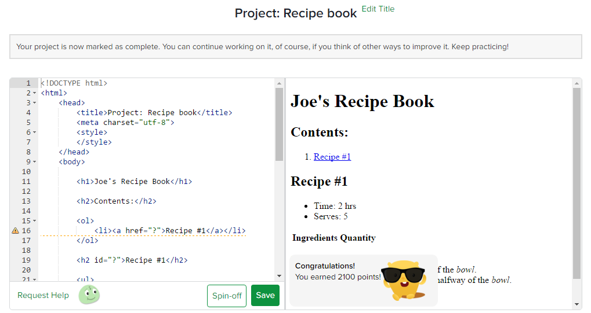
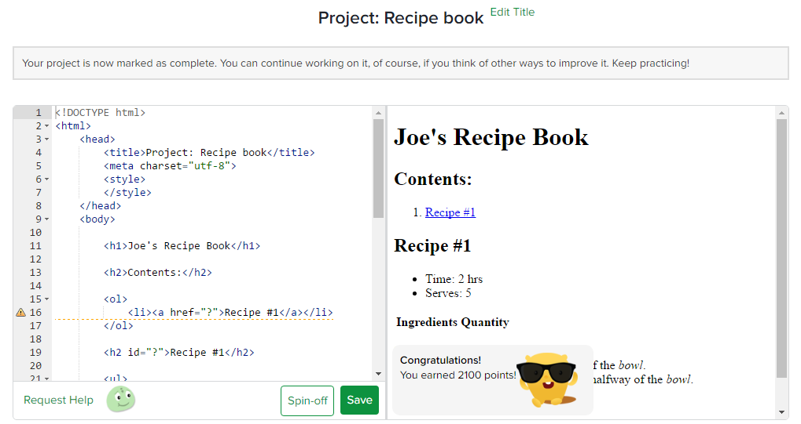
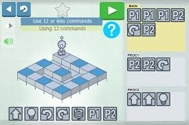
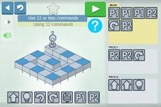

Khan Academy allows you to learn for free about math, art, computer programming, economics, physics, chemistry, biology, medicine, finance, history, and alot more. They also make it very clear on how to learn a specific subject. There is a cerain part in Khan's computer programming that helped me a lot with coding and programming. I learned how to change the font style, the color of fonts, the size and weight of fonts, ways to make a list or receipt, ways to change the size of an image, ways to move an image, and other things. Their "Intro to HTML/CSS" had videos and quizzes that taught me many of those programming skills..
Scratch is a free programming language and online community. You can create your own interactive stories, games, animations, and more. You can even change how your "sprite" looks like. A sprite is a character or image in Scratch. It allows you to program in a fun easy way by teaching you clearly while you use blocks of code.
Hour of Code or Code.org aims to encourage people, particularly school students in the United States, to learn computer science. Code.org is really fun because of how interactive it is with programming. It teams up with many famous people, companies, and other sites. Some of the sites and companies are Khan Academy, Scratch, Minecraft, Disney, Code Combat, CN. They use these popular companies, sites, and people to attract kids to want to learn how to program.
 

Lightbot is an educational video game for learning software programming concepts. It is also like Code.org or Hour of Code because it shows you the basic ways to start programming. It was fun to use Lightbot because of its obstacles, its characters, its setting, and its way it teaches you.
AppInventor allows you to design and program your own apps with step by steps guides. It gives you capability to look at your app in the view of a phone. There are many tutorials so that you don't get stuck on something for your app. It does take a lot to make a good app, but you could make one in AppInventor.
Notepad++ is a free source code editor which supports several programming languages. These are running under the MS Windows environment. It helped me make this website by letting me put code on it. I can also transfer my code from it to Github by saving it all in a folder. I would tranfer it to Github so other people could see website that I've worked on.
Canopy is cool.
Repl.it is a great website. It allowed me to share my code with my partner to make a story.
Go to index Go to ice Go to home